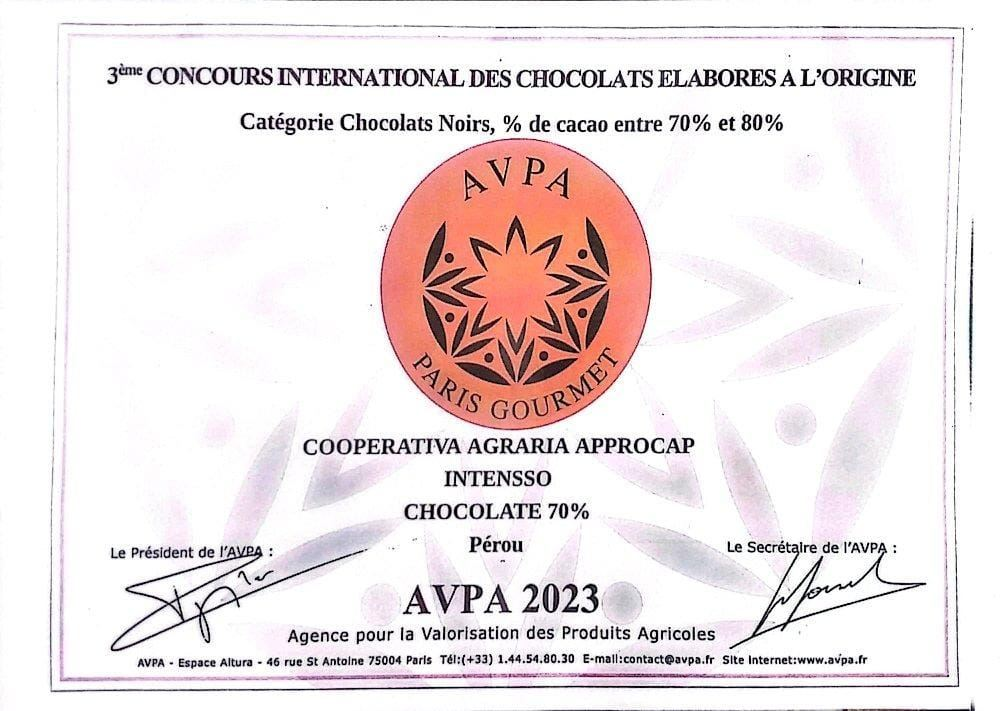

Cacao en polvo
Cacao en polvo 100% natural, elaborado a partir del grano de nuestros asociados.
Productos
Producimos cacao criollo en grano y lo transformamos en una línea propia de derivados bajo la marca INTENSSO.
Materia prima
Nuestras 180 familias asociadas conducen 215 hectáreas de cacao criollo en las zonas altas de San Juan de Bigote. La mitad de esa producción corresponde a cacao blanco, una variedad de alta valoración, junto a otras variedades propias de cada piso ecológico.
El cacao se recibe y procesa en la infraestructura de acopio y beneficio de la cooperativa, donde nuestro equipo técnico acompaña las etapas de poscosecha.

Marca de derivados
A partir del cacao de nuestros socios y socias elaboramos una línea de derivados bajo la marca INTENSSO, presente en ferias regionales, nacionales e internacionales.
La presentación y variedad exacta de cada producto puede variar según la temporada. Para conocer disponibilidad y presentaciones vigentes, contáctanos directamente.

Cacao en polvo 100% natural, elaborado a partir del grano de nuestros asociados.

Pasta de cacao sin aditivos, base de nuestra línea de chocolates.

Chocolate INTENSSO, con presentaciones reconocidas internacionalmente, entre ellas la barra de 70% cacao.

Bombones rellenos en distintos sabores, entre ellos maní, coco, ajonjolí y café.
Para consultas comerciales, cotizaciones o información sobre disponibilidad, escríbenos directamente.